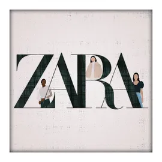
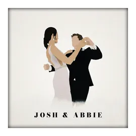
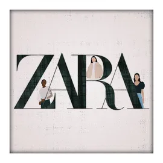
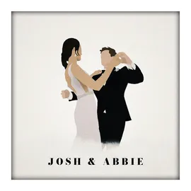

about me.
during my diploma of civil engineering, i discovered my passion for computer science since i would enjoy and excel at things related to software and programming. after the completiong of my diploma, i decided to pursue a degree in software engineering.
although i'm still a student, i've gathered a lot of skills and experiences. i have familiarised myself with software like VS Code, Blender, Figma, WPS Office, and i have a fair amount of kowledge in programming languages like HTML, CSS, JavaScript, and C++ and Java.
my artwork.
here's a collection of my digital artwork and designs that i've created over the years. each piece represents my growth and exploration in digital art. you can visit my graphic design portfolio to see more.

 





about me. again. lol.
i love music, art and entertainment. i played piano my whole life, since i taught myself to play piano on my tablet when i was around 7, but never got good at it, just enough to write songs. if the opportunity arises, i would love to pursue music as a part of my career.